Eco-Responders: After the Fire
You are part of the Eco-Responders team, called to Forest Glen after a wildfire. Your mission is to investigate what changed, study the evidence, and figure out how one wildfire could affect an entire ecosystem.
After the Fire
The air smells faintly of pine and smoke, reminders that nature is constantly changing.
As an Eco-Responder, you've learned that every fire tells two stories: one of loss and one of renewal.
This week, your team is on alert. Just over the ridge, a town called Forest Glen was hit by a wildfire two weeks ago. Your team must figure out what changed after the fire and what should happen next.
Your town, Maple Valley, sits just downwind.
As you explore, pay attention to what changed in the land, plants, animals, and people; you’ll use this evidence to make decisions later.
What do you think changed the most after the fire—and why?

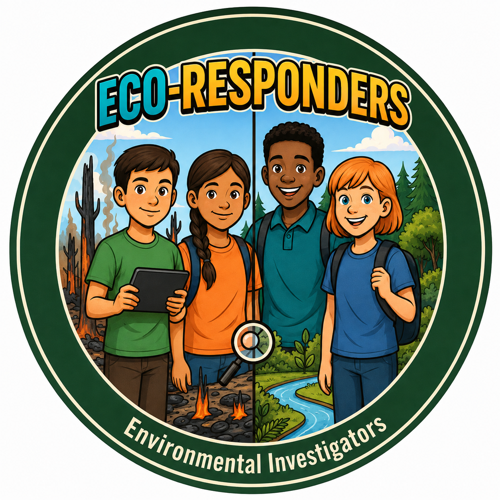
Ping! Ping! Ping!
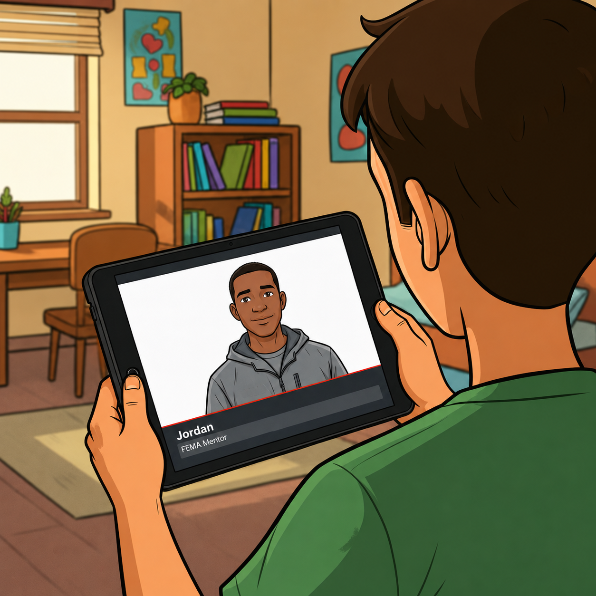
Your Eco-Responder tablet flashes red.
Jordan, your FEMA mentor, appears on the screen.
"Forest Glen's fire is finally contained," he says, "but NOAA just issued a Red Flag Warning for Maple Valley."
Relative humidity is 14%, winds steady at 25 mph, strong enough to push embers a mile.
"We need evidence from Forest Glen before the next spark, and don't forget to bring your field journal," says Jordan.
Your team needs evidence to understand what happened after the fire. Where will you begin your investigation?
Both approaches can help your team understand what happened, but they may reveal different clues.
NOAA Data Investigation
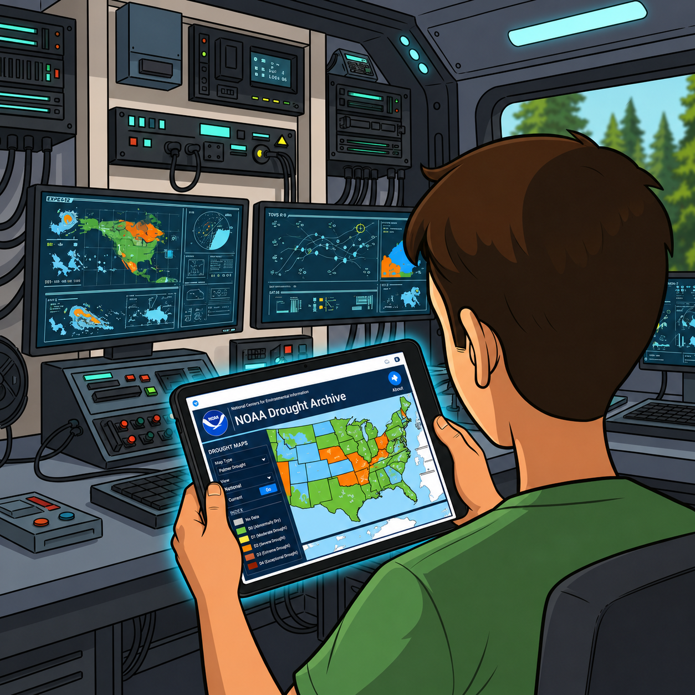
You arrive at the mobile lab, and Jordan pulls up the latest weather and fire-condition data on your tablet.
"We don't have time to check everything first," he says. "Choose the clue you think will tell us the most about why fire risk is rising."
Look for patterns in the data that could explain why the fire spread so quickly. How might these weather conditions affect plants, animals, or people in this area? And how might these conditions change what plants or animals can live in this area?
NOAA Data Review Simulator
Determine which data you want to prioritize.
What does your NOAA data suggest about the conditions before the fire, and how might those conditions have helped the fire spread?
Satellite Images
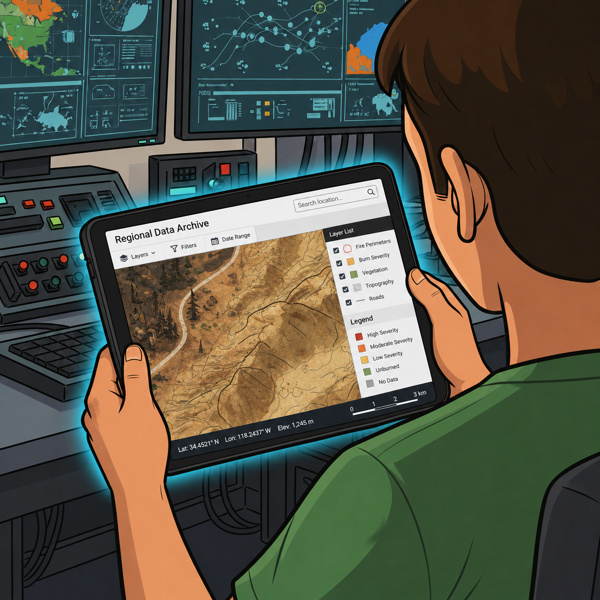
Jordan closes the graphs.
"If the weather looked like this, what do you think the team in Forest Glen might be seeing on the ground?"
You pull up the satellite overlay. The hills are dry and tan instead of green.
The humidity sensor reads 13%.
"Use the data and satellite image to describe what the forest probably looks like," Jordan says.
"What might happen to soil, plants, or wildlife after months of these conditions?"
Your observations complete the picture. Now it's time to decide what matters most.
Based on the NOAA data and satellite image, what do you think Forest Glen looked like before the fire, and what evidence supports your idea? Use one clue to support your idea.
Field Observations
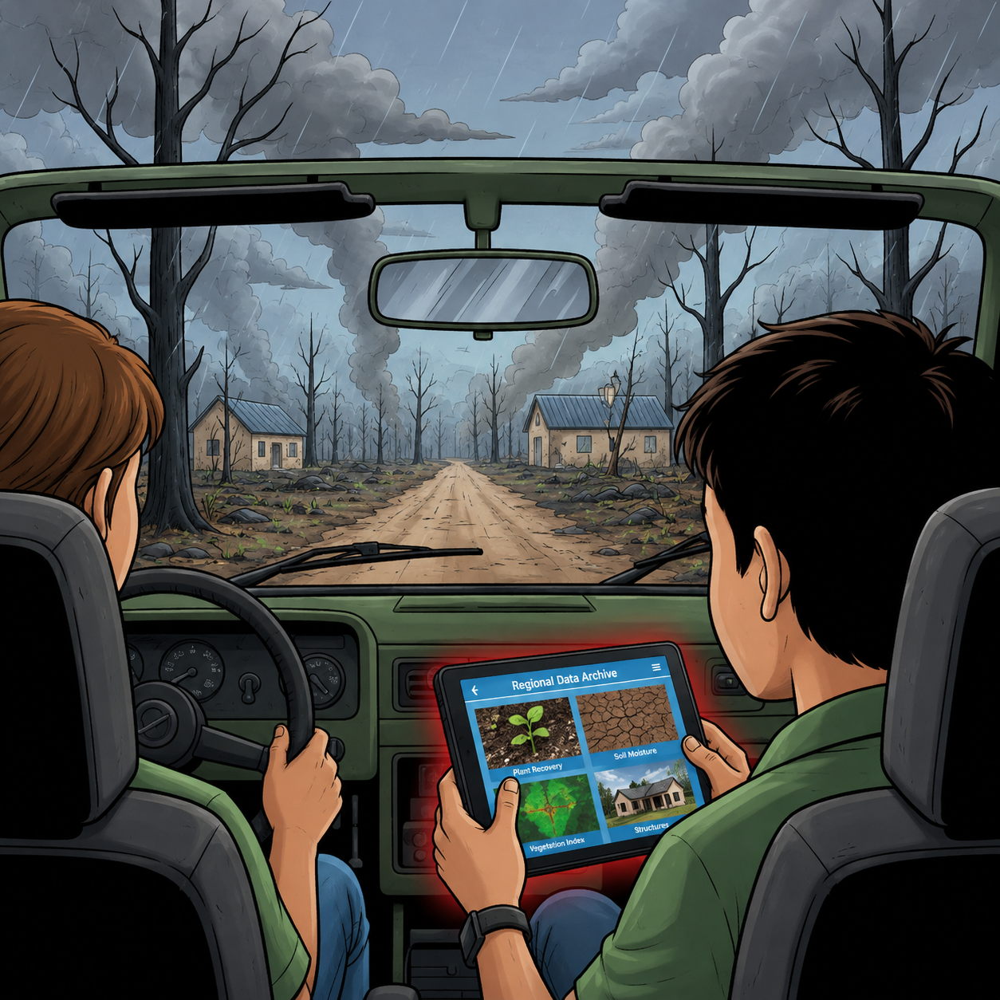
You ride beside Ranger Marisol into Forest Glen.
The air smells like ash and rain. Your tablet displays photos from Ranger Marisol.
In the photos, you notice:
- Soil dry and crumbly; the organic layer burned away.
- Green sprouts poking through black earth.
- Metal-roofed homes still standing; wood roofs gone.
"Soil's dry," she says. "Thin ash layer, but look, some pine cones cracked open."
You examine one: resin melted, seeds spilled onto the ground.
"Serotinous cones," she explains. "Some trees need heat to start over."
Nearby, houses with metal roofs stand untouched; those with wood shingles are gone.
🔥 Forest Glen — After the Wildfire
Explore the map to discover what happened to Forest Glen. As you explore, think about what these clues reveal about how the fire affected different parts of the system.
👆 Your team has marked key investigation zones across Forest Glen. Where will you investigate first?


🏢 Downtown District
The downtown buildings show heavy fire and smoke damage. Walls are charred, windows shattered, and metal structures have warped from extreme heat.

🏠 Residential Area
Homes in the residential area have been reduced to rubble. Only a stone chimney remains standing among the ash and debris. Personal belongings are scattered.

🌲 Forest Region
The forest has been devastated. Tree trunks are blackened and bare, fallen logs cover the ground, and thick haze fills the air. The forest floor is coated in ash.
What do your observations from Forest Glen suggest about how the fire affected the land, plants, animals, or people—and what evidence supports your thinking?
Field Observations
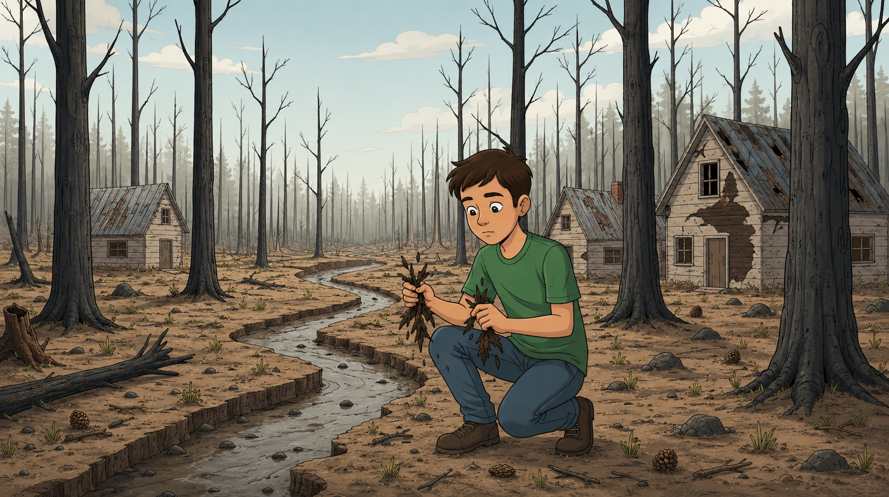
"We still don't have NOAA's climate data," Marisol says.
"But you've seen the ground. What kind of weather would cause this?"
You notice brittle leaves that crumble in your hand.
The streambed nearby is cracked.
"Use your field clues. Was this a wet year or a dry one? Cool or hot?" she asks.
"Explain your reasoning."
Your observations complete the picture. Now it's time to decide what matters most.
As you examine the field clues, think about what they reveal about the conditions before the fire—and how those conditions might affect plants and animals.
What weather conditions likely led to this fire? Use at least two field clues to support your answer. Then explain how those conditions might affect plants or animals in this area.
Team Regroup
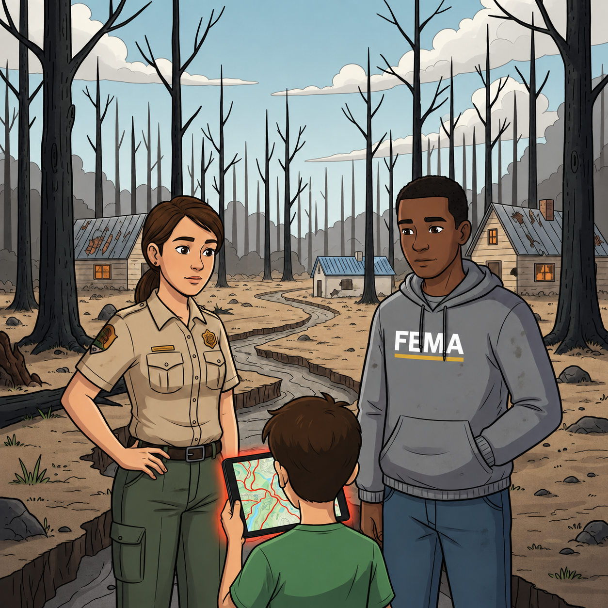
You regroup with Jordan and Ranger Marisol.
The valley stays quiet for a while, and there is not much more to do yet.
"Head home, get some rest, and be ready to return," Marisol says.
Two weeks later, you meet Jordan and Ranger Marisol again.
Three new reports appear on your tablet.
"What we do next depends on the evidence we study first," Jordan says.
Your team has multiple pieces of evidence. Which report will you prioritize to guide your next steps?
Human Impacts Report
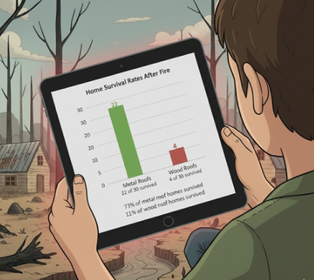
You open the FEMA report for Forest Glen.
The report shows that 22 of 30 homes with metal roofs survived, but only 4 of 30 homes with wood-shingle roofs survived.
"Notice the pattern," Jordan says.
You create a quick bar graph to compare the results.
What might this pattern mean for people’s safety, and how communities prepare for future fires?
What human choice helped homes survive the fire most? Use one data pattern to explain your answer.
Ecosystem Recovery Report
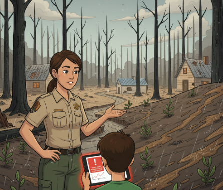
You and Marisol walk to the nearby canyon slopes.
"The manzanita's already back," Marisol says. "Roots that stayed alive underground start growing again."
You notice bare slopes nearby turning to mud after rain.
"No roots, no stability," she explains. "That runoff carries nutrients away."
A sensor alert pops up: nitrate levels in the creek have doubled since the fire, a sign that nutrients are washing away.
Back at the mobile lab, Jordan uploads your photos into the shared investigation portal.
How might these changes affect plants and animals over time in this ecosystem?
What is one sign that plant or animal populations are recovering, and one sign they are still struggling? Use evidence from the report.
Both Perspectives
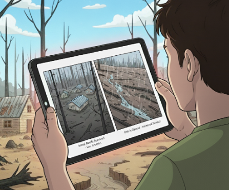
You split your tablet screen. One side shows how the fire affected homes. The other shows how the fire affected the land.
You start matching connections between what people did and how the land responded.
- Areas with more homes still standing had less soil washing away.
- In places where burned debris was cleared too quickly, more runoff flowed downhill.
"Everything's connected," Jordan says. "Our recovery plans have to be connected, too."
How might one human action change plant or animal populations, and how could those changes affect people again?
How did one human action affect the ecosystem, and how did that change impact people or the community?
Team Briefing

A green icon flashes on your tablet: "TEAM BRIEFING IN PROGRESS."
Based on what your team uncovered, it’s time to compare findings with other investigation teams.
Jordan's voice comes through the speaker.
"Eco-Responders, it's time to share what each investigation team discovered."
Screens blink on one by one as you compare findings from the Human Impact, Ecosystem, and Combined Analysis Reports.
As you read the reports, think about how one decision led to changes in the land—and how those changes affected people again.
What is one cause-and-effect chain you noticed between a human decision and changes in plant or animal populations?
Seeing the System

After the briefing, two images appear on your tablet: one neighborhood destroyed, another still standing.
"Same fire, same wind," Marisol says. "Different results."
Areas that cleared brush but kept native shrubs recovered fastest. Over-cleared zones washed away after the first rain.
"Vegetation protects the soil," she reminds you. "Too little cover, and erosion takes over."
Forest Glen cannot be undone. But Maple Valley can still learn from what happened here.
"Before we tell Maple Valley anything," Jordan says, "we have to understand how all these pieces connect."
"When one thing changes, soil, plants, weather, or human decisions, it sets off ripples through the whole system."
Your team has the evidence. Now it's time to see Forest Glen as a system, so you can help Maple Valley plan ahead wisely.
Choose one change in Forest Glen. What other changes could it cause in the system? Explain how one change leads to another.
Feedback Loops
Your team gathers back at the command van.
Jordan leans over your tablet, loading the next model.
"Before we give Maple Valley any advice," Jordan says, "there's something I need you to understand."
"This is a feedback loop. It's how one change in the environment can cause a cycle that keeps repeating and makes the original problem stronger — or weaker."
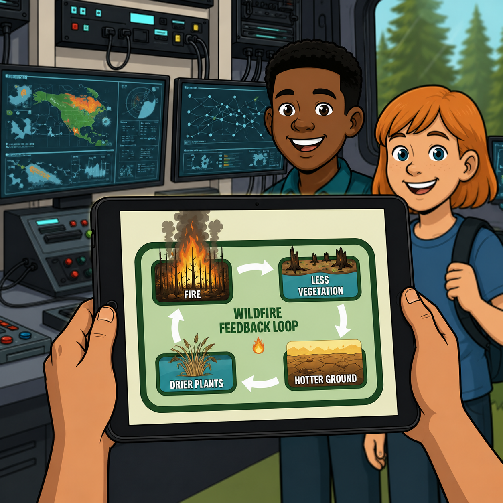
He taps the screen, and a new loop appears.
"Sometimes humans can break a loop or start a new one."
"Adding trees, improving soil, or creating fire-smart zones can flip a damaging loop into a healing one."
He glances at you.
"Your next task: figure out how the loops worked in Forest Glen. Once we understand the system, we'll know what to tell Maple Valley."
Follow the loop step by step: how does one change lead to the next, and how does the cycle continue?
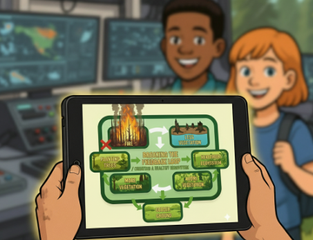
What happens when a feedback loop keeps repeating? How could people change one part of the loop to improve the system?
Feedback Loop Model
Back in the command van, you open the modeling app.
Arrows link climate → vegetation → wildlife → human choices.
"To make the best recommendation, your team needs to see how everything connects. Build the feedback loop," Jordan points out.
"Fewer trees = less shade = hotter ground = drier fuel next season."
Every loop shows how one small change can ripple through the whole system.
When your model is ready, your team will bring it to Maple Valley's planners, so they can see the system before they make a decision.
Start with one change you noticed earlier. Then think step by step: what happens next, and what happens after that?
Feedback Loop Model: How One Change Leads to Another
Build Your Eco-Responder Feedback Model: Use the word bank to fill in the feedback loop and show how one environmental change leads to another. You only need to use 4 boxes to complete your loop.
Try to connect both human actions and environmental changes in your loop.
Word Bank
Tip: Drag chips into the boxes. Click × to remove a placed chip.
Step 1 → Step 2 → Step 3 → Step 4 → Step 1 (repeats)
Planning Forward for Maple Valley
Planning Forward for Maple Valley

Days later, your feedback loop model reaches Maple Valley's town hall.
The room hums with voices. Families, planners, and neighbors are here because of what happened in Forest Glen.
Mayor Elena steps to the podium.
"Forest Glen's fire changed more than trees," she begins. "It changed how we think about safety, building, and the land itself."
"Maple Valley wasn't burned — but we were close. Forest Glen's loss is a warning to us."
"If we prepare wisely now, we can protect both our homes and our habitats before the next fire season."
She points to your feedback loop on the big screen.
"Our Eco-Responders have shown us how one choice leads to another. So let's use that."
Mayor Elena shares three forward-thinking plans for Maple Valley.
Each plan balances human needs and environmental health differently.
Think back to your feedback loop. Which plan breaks harmful cycles or creates a healthier system over time?
Which plan should Maple Valley choose? Use the evidence from Forest Glen and what you learned about feedback loops to decide.
Plan A: Build Fast
Expand Maple Valley quickly with few new fire-safety rules.
Feels quick, but sets up loops of erosion and higher future fire risk.
Plan B: Build Smarter
Use fire-resistant materials and plant native vegetation.
Breaks ignition loops before a fire starts.
Plan C: Balanced Plan
Prepare in stages, with defensible space and habitat protection.
Supports both people and ecosystems, starts a healing loop.
Which plan do you recommend for Maple Valley? Use evidence to explain how it will protect plant or animal populations.
A Message for Maple Valley
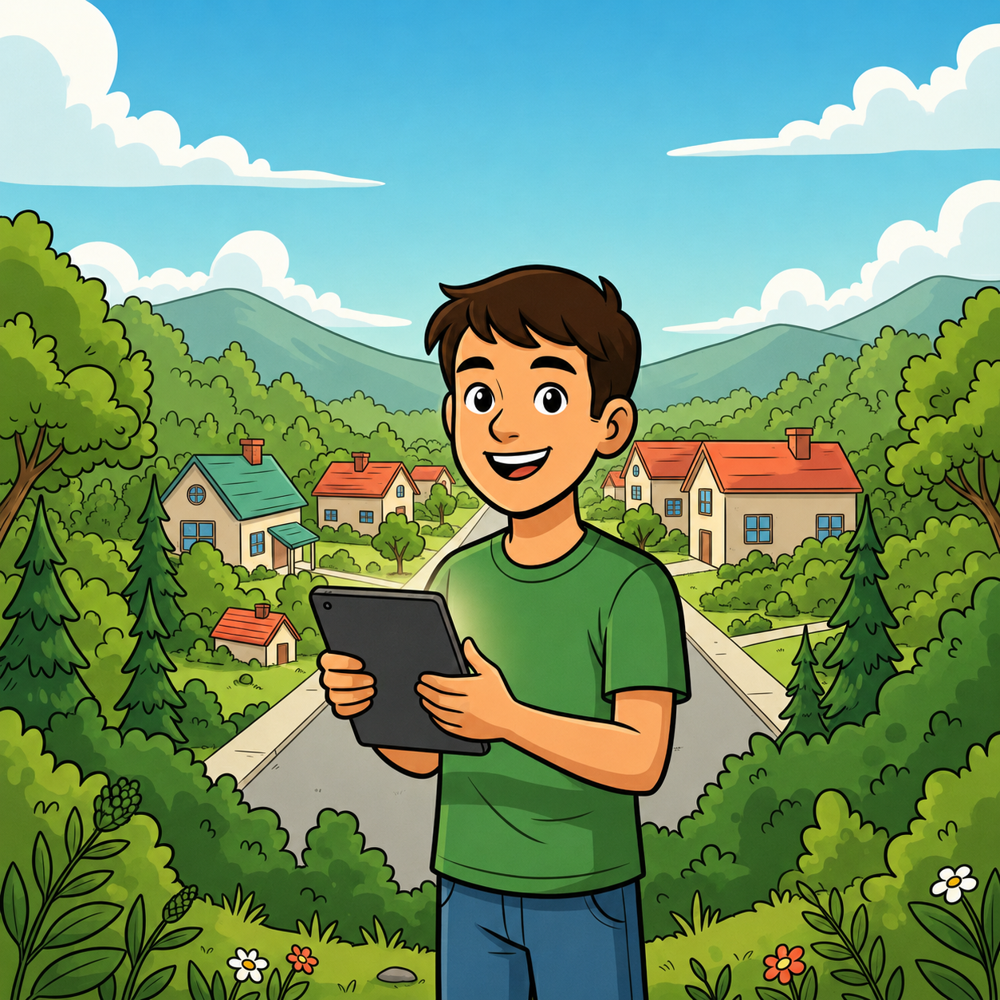
Word spreads fast. Maple Valley neighbors are asking questions — they heard about Forest Glen, and they want to know what they can do.
"You've studied the evidence," Jordan says. "Now it's your turn to help your neighbors get fire-smart before the next fire season."
Your Eco-Responder team has been asked to create a message for Maple Valley residents — a PSA (Public Service Announcement) that uses what Forest Glen taught you.
Use what you learned from Forest Glen and your feedback loop thinking to decide what message will help your community the most.
You realize your mission was never just about studying a disaster. It's about helping a community prevent the next one.
Your Eco-Responder team is sending a fire-smart message to Maple Valley residents.
Choose the format that will best help Maple Valley residents prepare before the next fire season.
Write a short PSA for Maple Valley residents. Use evidence from Forest Glen to explain what they should do and why it matters.
Write a short public safety script for Maple Valley residents.
Plan an infographic that teaches Maple Valley residents how to stay fire-smart before the next fire season.
Mission Debrief

A week later, you bike past a brand new sign:
"Maple Valley — Fire-Smart Zone."
Forest Glen cannot be undone. But because your team studied it carefully, Maple Valley is planning ahead.
Jordan sends one last message:
"Outstanding work, Eco-Responder. Science and empathy together, that’s real leadership. That’s what Eco-Responders do."
Think about what you learned, how your thinking changed, and how your decisions shaped your understanding.
Pick two of the following reflection questions to answer:
1. What evidence from Forest Glen helped you understand how natural and human factors interact?
2. How did the choices you made during the investigation influence your final recommendation?
3. How can people and ecosystems prepare and recover together?
🏅 Mission Complete!
You've completed your Eco-Responder mission. Export your Field Journal to save your work.